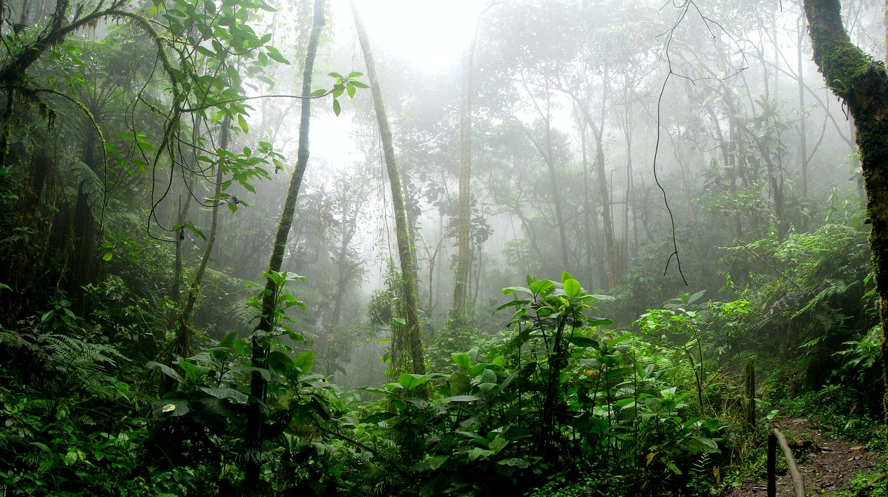

Beautiful Beaches

Taniti Island boasts stunning white sand beaches that offer a serene escape for visitors. The crystal-clear waters and soft sands create an idyllic setting for relaxation and adventure. Paddleboarding enthusiasts will find convenient rental options, making it easy to explore the tranquil lagoons and enjoy the breathtaking views. Whether you're seeking a peaceful retreat or an active day on the water, Taniti Island's beaches provide the perfect backdrop for unforgettable experiences.
Rainforest Hikes
Taniti Island's lush rainforests are a haven for nature enthusiasts and adventurers alike. These vibrant ecosystems are teeming with exotic wildlife, colorful flora, and cascading waterfalls, making every step an awe-inspiring journey. Visitors can embark on guided tours that uncover the secrets of the rainforest, led by knowledgeable locals who share fascinating insights about the island's biodiversity. For the more adventurous, hiking trails wind through the heart of the jungle, offering breathtaking views and a chance to fully immerse yourself in the natural beauty of Taniti Island. Whether guided or self-explored, the rainforest promises an unforgettable connection with nature.
- Click here to check out availabe tours!
Volcano Exploration

Taniti Island's active volcano offers an exhilarating experience for adventure seekers and nature lovers. Guided tours provide a safe and informative way to explore this majestic natural wonder. Visitors can trek along scenic trails that lead to breathtaking viewpoints, where they can witness the awe-inspiring beauty of the volcanic landscape. Knowledgeable guides share fascinating insights about the volcano's history, geology, and cultural significance, making the journey both educational and unforgettable. For those seeking a truly unique adventure, the volcano tours on Taniti Island are an absolute must.
- Click here to check out availabe tours!